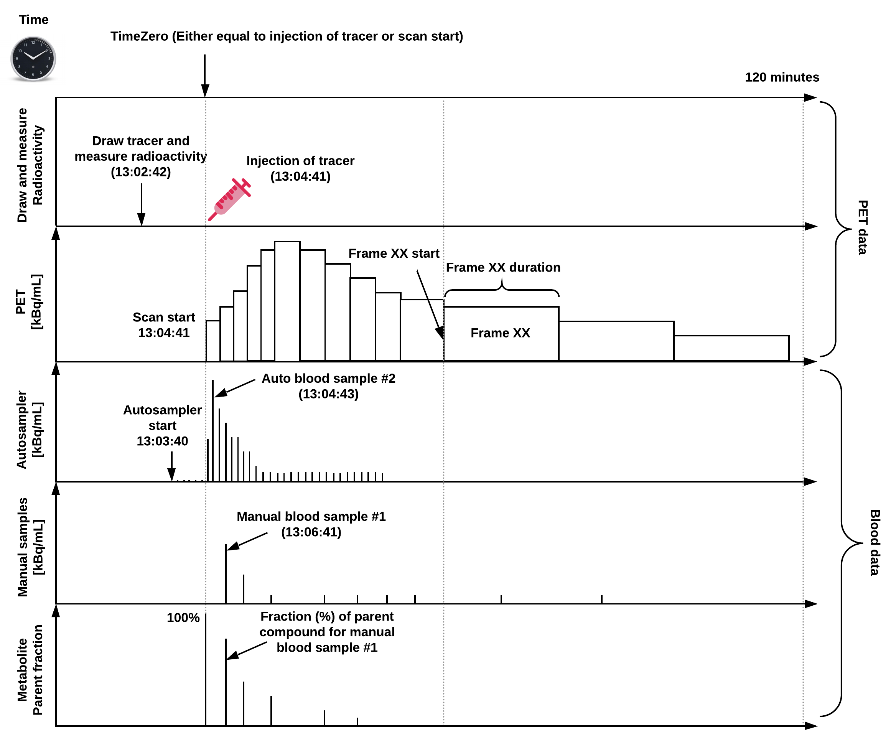

Positron Emission Tomography
Contents
Positron Emission Tomography¶
Support for Positron Emission Tomography (PET) was developed as a BIDS Extension Proposal. Please see Citing BIDS on how to appropriately credit this extension when referring to it in the context of the academic literature.
Several example PET datasets have been formatted using this specification and can be used for practical guidance when curating a new dataset.
Further PET datasets are available from OpenNeuro.
Terminology and conventions¶
PET-BIDS is fully consistent with the BIDS specification as a whole. However, BIDS was initially developed in the context of MRI, so some terminology may be unfamiliar to researchers from each field. This section adds clarifications to Common Principles - Definitions for the PET context, and introduces the term “time zero” which is currently specific to PET.
Session - In most cases, a new session with respect to PET corresponds to a visit to the scanning site, and starts with a new injection. In situations where different data types are obtained over several visits (for example, FDG PET on one day followed by amyloid PET a couple days after) these scans may be grouped into the same session. In other datasets, a subject leaving the scanner and returning under the same injection may be considered separate sessions.
Run - In PET, subjects may have to leave the scanner to use the bathroom. While leaving the scanner would interrupt an MR acquisition, in PET this disruption is more appropriately considered missing data during a run.
Time zero - A reference point in time, to which all timestamps pertaining to a recording are relative. Time zero will most commonly be the time of injection of a radioisotope, or the time at which the first scan of an acquisition is begun. If a pharmacological within-scan challenge is performed, another time zero may be more convenient.
An overview of a common PET experiment (with blood data) can be seen in Figure 1, defined on a single time scale relative to a predefined “time zero”.

Figure 1: Overview of a common PET experiment, including blood measurements,
and defined on a common time scale.
Note, “time zero” is often defined as time of injection or scan start,
but if a pharmaceutical challenge is carried out during the scan,
this time point may also be chosen as time zero.
The injected dose, the PET data, and blood data should all be decay-corrected to time zero,
but because the time of injection does not always coincide with scan start,
the PET data may not always be decay-corrected to the time of injection.
If this is not the case, this may be indicated in the reconstruction section
(ImageDecayCorrected and ImageDecayCorrectionTime).
In this example, tracer injection coincides with scan start.
PET recording data¶
PET data MUST be stored in the pet directory.
PET imaging data SHOULD be stored in 4D (or 3D, if only one volume was acquired)
NIfTI files with the _pet suffix.
Volumes MUST be stored in chronological order (the order they were acquired in).
The OPTIONAL task-<label> is used to
indicate a task subjects were asked to perform in the scanner.
Those labels MUST be consistent across subjects and sessions.
For task based PET, a corresponding task events file MUST be provided
(please note that this file is not necessary for resting scans).
The trc-<label> entity is used to
indicate the tracer used.
This entity is OPTIONAL if only one tracer is used in the study,
but REQUIRED to distinguish between tracers if multiple are used.
The label used is arbitrary and each file requires a separate JSON sidecar
with details of the tracer used (see below).
Examples are trc-18FFDG for fludeoxyglucose or trc-11CPIB for Pittsburgh compound B.
Other labels are permitted, as long as they are consistent across subjects and sessions
and consist only of the legal label characters.
If more than one run of the same task and acquisition (tracer) are acquired during
the same session, the run-<index> entity MUST be used:
_run-1, _run-2, _run-3, and so on.
If only one run was acquired the run-<index> can be omitted.
The OPTIONAL rec-<label> entity
is used to indicate the reconstruction method used for the image,
with four reserved values:
acdyn, for reconstructions with attenuation correction of dynamic data;acstat, for reconstructions with attenuation correction of static data;nacdyn, for reconstructions without attenuation correction of dynamic data;nacstat, for reconstructions without attenuation correction of static data.
Further details regarding reconstruction are in the _pet.json file.
If multiple reconstructions of the data are made with the same type of reconstruction,
a number MAY be appended to the label,
for example rec-acdyn1 and rec-acdyn2.
PET metadata¶
PET data MUST be described by metadata fields, stored in sidecar JSON files. These fields are derived from the recommendations in Knudsen et al. 2020, doi:10.1177/0271678X20905433, which we divide into several categories:
Scanner Hardware¶
Radiochemistry¶
Pharmaceuticals¶
Time¶
We refer to the common principles for the standards for describing dates and timestamps, including possibilities for anonymization (see Units).
Reconstruction¶
All reconstruction-specific parameters that are not specified, but one wants to include, should go into the ReconMethodParameterValues field.
Example (*_pet.json)¶
{
"Manufacturer": "Siemens",
"ManufacturersModelName": "High-Resolution Research Tomograph (HRRT, CTI/Siemens)",
"BodyPart": "Brain",
"Units": "Bq/mL",
"TracerName": "CIMBI-36",
"TracerRadionuclide": "C11",
"TracerMolecularWeight": 380.28,
"TracerMolecularWeightUnits": "g/mol",
"InjectedRadioactivity": 573,
"InjectedRadioActivityUnits": "MBq",
"InjectedMass": 0.62,
"InjectedMassUnits": "ug",
"SpecificRadioactivity": 929.6,
"SpecificRadioactivityUnits": "MBq/ug",
"ModeOfAdministration": "bolus",
"MolarActivity": 353.51,
"MolarActivityUnits": "GBq/umol",
"MolarActivityMeasTime": "13:04:42",
"TimeZero": "13:04:42",
"ScanStart": 0,
"InjectionStart": 0,
"FrameTimesStart": [0, 10, 20, 30, 40, 50, 60, 80, 100, 120, 140, 160, 180, 240, 300, 360, 420, 480, 540, 660, 780, 900, 1020, 1140, 1260, 1380, 1500, 1800, 2100, 2400, 2700, 3000, 3300, 3600, 3900, 4200, 4500, 4800, 5100, 5400, 5700, 6000, 6300, 6600, 6900],
"FrameDuration": [10, 10, 10, 10, 10, 10, 20, 20, 20, 20, 20, 20, 60, 60, 60, 60, 60, 60, 120, 120, 120, 120, 120, 120, 120, 120, 300, 300, 300, 300, 300, 300, 300, 300, 300, 300, 300, 300, 300, 300, 300, 300, 300, 300, 300],
"AcquisitionMode": "list mode",
"ImageDecayCorrected": true,
"ImageDecayCorrectionTime": 0,
"ReconMethodName": "3D-OSEM-PSF",
"ReconMethodParameterLabels": ["subsets","iterations"],
"ReconMethodParameterUnits": ["none","none"],
"ReconMethodParameterValues": [16,10],
"ReconFilterType": "none",
"AttenuationCorrection": "[137Cs]transmission scan-based"
}
Recommended patient data¶
Knudsen et al. 2020 (doi:10.1177/0271678X20905433) recommends recording participant body weight. If recorded once per participant, these data SHOULD be included in the Participants file or as Phenotypic and assessment data.
For example:
participant_id body_weight
sub-01 58
sub-02 96
sub-03 72
If multiple measurements are made, these data SHOULD be included in the Sessions file.
For example:
session_id body_weight
ses-01 58
ses-02 59
Blood recording data¶
If collected, blood measurements of radioactivity are be stored in
Tabular files and located in
the pet/ directory along with the corresponding PET data.
The OPTIONAL recording entity is used to distinguish sampling methods.
For example, if an autosampler is used to record continuous blood samples,
and manual measurements are also taken,
then the files may have recording labels autosampler and manual,
respectively.
If multiple recording methods are used on the same PET acquisition,
the recording entity MUST be used to distinguish them.
All blood measurements should be reported according to a single time-scale
in relation to time zero defined by the PET data (Figure 1).
All definitions used below are in accordance with
Innis et al. 2007 (doi:10.1038/sj.jcbfm.9600493).
Some metadata about the recording MUST be provided in an additional JSON file.
The following metadata SHOULD or MUST be provided if corresponding flags are true.
The following columns are defined for _blood.tsv files.
The time column MUST always be the first column.
As with all tabular files,
additional columns MAY be defined in _blood.json.
For clarity, it is RECOMMENDED to include the above column definitions in _blood.json,
as shown in the following example.
Example blood data¶
*_recording-manual_blood.json:
{
"PlasmaAvail": true,
"WholeBloodAvail": true,
"MetaboliteAvail": true,
"MetaboliteMethod": "HPLC",
"MetaboliteRecoveryCorrectionApplied": false,
"DispersionCorrected": false,
"time": {
"Description": "Time in relation to time zero defined by the _pet.json",
"Units": "s"
},
"plasma_radioactivity": {
"Description": "Radioactivity in plasma samples. Measured using COBRA counter.",
"Units": "kBq/mL"
},
"whole_blood_radioactivity": {
"Description": "Radioactivity in whole blood samples. Measured using COBRA counter.",
"Units": "kBq/mL"
},
"metabolite_parent_fraction": {
"Description": "Parent fraction of the radiotracer.",
"Units": "arbitrary"
},
"metabolite_polar_fraction": {
"Description": "Polar metabolite fraction of the radiotracer.",
"Units": "arbitrary"
},
"metabolite_lipophilic_fraction": {
"Description": "Lipophilic metabolite fraction of the radiotracer.",
"Units": "arbitrary"
}
}
*_recording-manual_blood.tsv:
time plasma_radioactivity whole_blood_radioactivity metabolite_parent_fraction metabolite_polar_fraction
0 0 0 1 0
145 43.31 33.79 0.5749 0.1336
292 48.96 37.42 0.3149 0.2746
602 39.84 32.05 0.1469 0.3548
1248 37.38 31.52 0.073 0.444
1785 36.40 28.83 0.078 0.429
2390 33.13 26.32 0.061 0.453
3059 30.83 25.22 0.049 0.473
4196 27.28 21.98 0.036 0.503
5407 22.70 19.49 0.032 0.523
7193 19.71 15.70 0.02 0.559